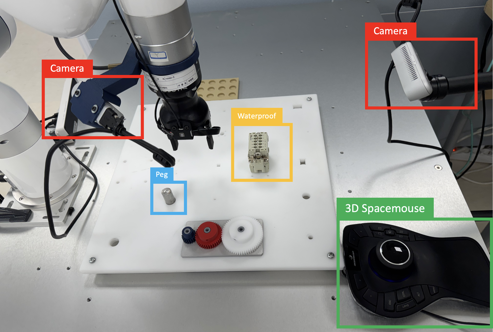

Jusung Kim
I'm a Research Intern at the Intelligent Robotics Center, KETI (Korea Electronics Technology Institute). I build robot control frameworks, connect simulation to hardware, and deploy learned policies on real robots. My work spans reinforcement / imitation learning, sim-to-real transfer, and robot manipulation & control.
I hold a B.S. in Aerospace Engineering from Konkuk University and a B.S. in Aero Mechanical Engineering from Hanseo University.

Projects & Research
Three team projects, one independent study, and three enabling technologies.
|
Multimodal Control, GASP Learning & Real-Robot Deployment Project 01 · KETI · March 2024 – Present Core contribution: control framework, learning integration & deployment RoboWorld 2024 live demo A vision–tactile control framework extended from a single arm in 2024 to a dual-arm platform in 2026. Shared MuJoCo and hardware interfaces connect teleoperation, GASP learning with a GWS reward, an asymmetric critic, and marker-based safety checks. The asymmetric Actor was deployed on the right xArm7 and Allegro Hand; real sym/asym videos show example outcomes, not a measured success-rate comparison. |
|
 |
Peg-in-Hole Imitation Learning & Tactile Policy Extension Project 02 · KETI · March 2024 – Present Core contribution: teleoperation & demonstration collection AutomationWorld 2026 live demo A team framework for robot manipulation and grasping evaluation: SpaceMouse teleoperation, synchronized robot and camera data, Diffusion Policy and flow-matching rollouts, and a live demonstration at AutomationWorld 2026. The later extension adds XELA tactile measurements to the policy observations for contact-rich insertion. |
|
World Model Sim-to-Real & Quadruped RL Tasks Project 03 · KETI · January 2025 – Present Contribution: SimDist reproduction & hardware deployment Reproduced SimDist from simulation pretraining to MPPI control on a Unitree Go2 at 50 Hz, then adapted only the dynamics model using real rollouts. Real-robot results are qualitative. Related mjlab/PPO work covers walking, box jumping and leaping in simulation; no hardware deployment or retained quantitative results are claimed for those tasks. |
|
|
SO-101: ROS 2 Imitation Learning Pipeline (ACT & Flow Matching) Independent research · April – August 2026 Sole developer Built the complete ROS 2 collection, conversion, training and inference pipeline. With 300 demonstrations and 300k training steps per policy, ACT completed 37/50 in-range trials (74%) and flow matching 30/50 (60%); out-of-range completion was 2/10 and 3/10. This evaluation did not establish a success-rate difference. Measured command-loop rates were 29.8 and 26.8 Hz. code |
|
|
RBFNN Residual Torque Compensation for a Dexterous Hand Enabling technology 01 · KETI · September – November 2025 Controller design & real-robot validation 2025 & KRoC 2026 posters An online RBFNN compensation layer added to the Allegro Hand’s existing PD controller, with wrist-relative gravity as an input. On hand joint 7, tracking error changed from roughly ±0.6 rad to ±0.15 rad. The same control structure was used for grasp holding under disturbances; trial counts were not recorded. |
|
 |
F/T-Sensor Fingertip Design & Contact Location Estimation Enabling technology 02 · KETI · May – September 2024 Fingertip design & contact estimation ICCAS 2024 first-author poster A 40 × 45 × 28 mm fingertip with one six-axis F/T sensor and curved plus planar contact regions. Contact locations were evaluated against a UR5e-positioned tool across three regions, with 0.85 mm mean error. This validates contact estimation independently; integration into a vision-based pose estimator was not performed. |
|
GJK Distance-Based Velocity Damping for Collision Avoidance Enabling technology 03 · KETI · January – April 2025 Core contribution: distance-based control & sim-to-real validation Robot links and obstacles are approximated by capsules for GJK distance queries. Obstacles come from a RealSense D435i point cloud; clearance scales motion speed without path replanning. Validated in MuJoCo and on an xArm6 at 30 Hz, using a depth camera without dedicated proximity sensors. |
Publications
| A Method for Estimating Contact Location on Dexterous Hand Fingertips — ICCAS 2024, Jeju, Korea First-author poster |
| RBFNN-Based Online Disturbance Compensation for Robust Grasping — KRoC 2026 First-author poster |
| Adaptive Control of a Multi-Fingered Dexterous Hand via RBFNN-based Residual Torque Compensation — Korean Society of Manufacturing Technology Engineers (KSMTE), 2025 First-author poster |